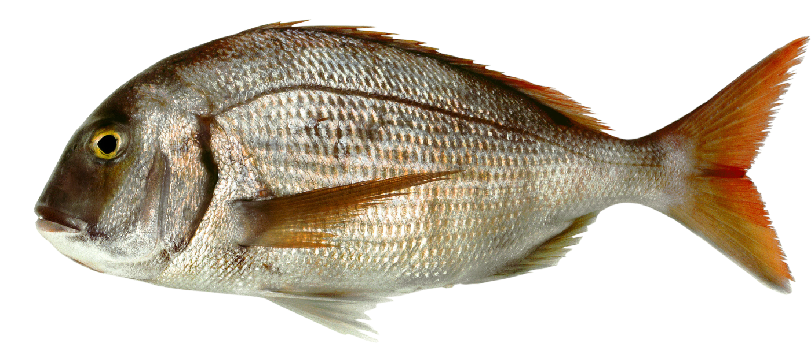

FICHA TÉCNICATECHNICAL DATA SHEET
Besugo — Red Porgy
Pagrus pagrus (Linnaeus, 1758)
Identificación / Identification
Nombre comercialCommercial nameBesugoRed Porgy
Nombre científicoScientific namePagrus pagrus
FamiliaFamilySparidae
ÓrdenOrderPerciformes
Código HSHS Code0303.89
Zona de pesca / Fishing area
OcéanoOceanAtlántico SudoccidentalSouthwest Atlantic
Zona FAOFAO Area41
PaísCountryArgentina — Mar ArgentinoArgentina — Argentine Sea
DistribuciónDistribution35°S–41°S (costa bonaerense) y golfos norpatagónicos35°S–41°S (Buenos Aires coast) & North Patagonian gulfs
ProfundidadDepth5–136 m
Arte de pescaFishing gearNasas y red de arrastre de fondoTraps and bottom trawl
TemporadaFishing seasonSeptiembre–mayo (no se pesca en invierno)September–May (not fished in winter)

Biología / Biology
Talla máx.Max size54 cm
LongevidadLongevity≈ 16 años≈ 16 years
Ciclo de vidaLife cycleUna puesta anual (oct–ene); madurez ≈ 24,5 cmOne annual spawn (Oct–Jan); maturity ≈ 24.5 cm
ColorColorRosado uniforme con manchas azules; aletas amarillo rosadoUniform pinkish with blue spots; pinkish-yellow fins
Especie hermafrodita: la mayoría de los individuos son hembras a edades tempranas y alrededor de los 5 años los sexos quedan balanceados.
Hermaphroditic species: most individuals are females at early ages and by about 5 years the sexes become balanced.
Presentaciones / Presentations
| ProductoProduct | PresentaciónForm | Envase y congeladoPacking & freezing |
|---|---|---|
| Tronco | Sin cabeza ni víscerasCabeza y vísceras removidas | Congelado · Block / IQF |
| Entero sin cabeza | EvisceradoEviscerated | Congelado · Block / IQF |
| Entero | FrescoFresh | Refrigerado (mercado Europeo por avion) |
Producto congelado a bordo o en tierra. Conservación a ≤ −18 °C.
Frozen on board or on shore. Stored at ≤ −18 °C.
Composición nutricional / Nutritional composition (per 100 g, raw)
19,4–22,1 g
ProteínaProtein
1,2–3,9 g
LípidosFat
0,30 g
Omega-3 (EPA+DHA)
88–124 kcal
EnergíaEnergy
Proteínas, lípidos y energía: INIDEP 2018 (rangos, producto fresco). Omega-3: referencia FishBase/FAO. No sustituyen un análisis de laboratorio del lote.Protein, fat and energy: INIDEP 2018 (ranges, raw product). Omega-3: FishBase/FAO reference. Not a substitute for a batch laboratory analysis.
Conservación y trazabilidad / Storage & traceability
ConservaciónStorageCongelado ≤ −18°CFrozen ≤ −18°C
SistemaSystemIQF / Block / InterfoliadoIQF / Block / Interleaved
Vida útilShelf life24 meses24 months
TrazabilidadTraceabilityPor lote / capturaBy batch / catch
frompatagoniaseafoodarg
By Sottomarina SA / Guigus SA
Fuente / Source: INIDEP 2018 · FishBase (Pagrus pagrus) · FAO